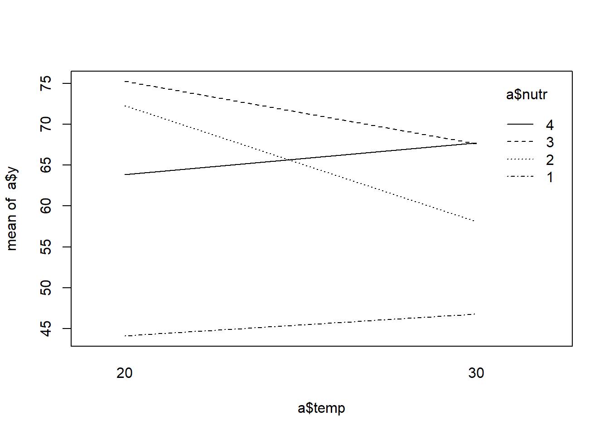
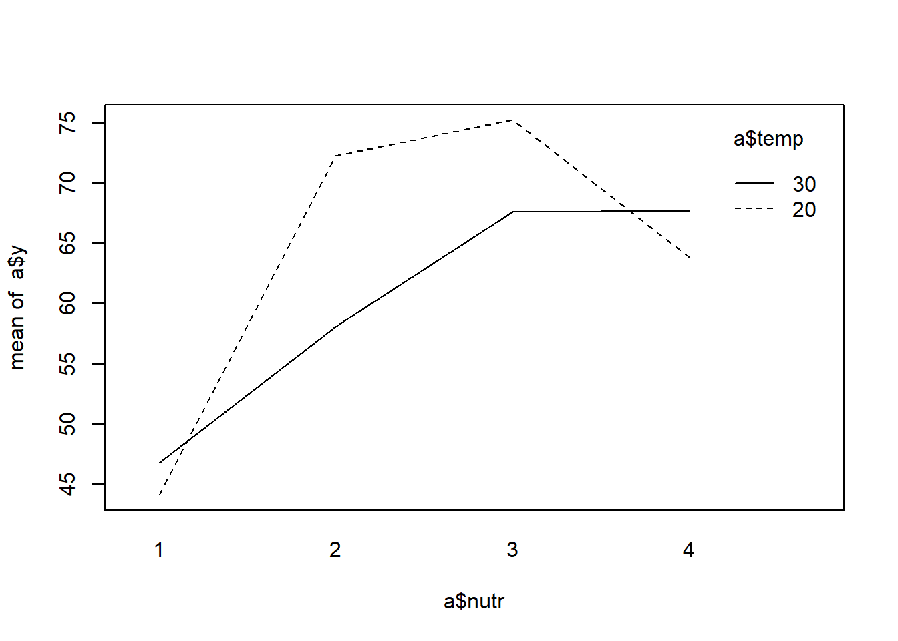

blk temp chamber nutr y
1 1 20 1 1 40.2
2 1 20 1 2 75.7
3 1 20 1 3 77.8
4 1 20 1 4 67.6
5 0 20 2 1 48.0
6 0 20 2 2 68.9Split_plot_design_plus_control
Split-Plot Design Plus Control
So far, we have considered Completely Randomized Designs and Randomized Complete Block Designs with Control. Nevertheless, there are situations where we may have a nested design with a Control. We consider the simplest case of a nested design which is the Split-plot with a Control. For example, we can consider an experiment with two factors, Crop rotation method and Perennial grass treatment. Due to resource limitation, the researcher conducts the experiment using a split-plot design where Crop rotation method is the whole plot factor with three levels and three replicates and Perennial grass treatment is the split-plot factor with three levels, where one level is the control.
We like to point out that for split-plot design, it can be tricky and extremely difficult in setting up a control treatment that leads to an analysis of this form. This is because an experimenter may decide to set one of the levels of the whole plot factor as control or may set up one of the levels of the split-plot factor as a control. In most cases, we are likely to see the latter from the consulting desk.This raises the question of how analyzing a split-plot design without a control differs from that with a control treatment. Upon careful observation, the difference arises when treatment comparisons are made. Nevertheless, there are a lot of instances where we may see that wherever we had a control, the value for the response was significantly different than the other treatments. In such instances, one may have to pause and think about how the contrast statements may be written.
Again, the analysis is the same as the traditional split-plot design. The only difference is that, one must first check for whole plot by split-plot interaction effect. If there is no significant interaction effect, then it is reasonable to write contrasts that compare the effects of treatments to that of the control. We illustrate the concept using an example below.
Example
An experiment is conducted to evaluate the effect of two temperatures (20 C and 30 C) and four levels of a plant nutrient (0 55 70 85 grams) on dry matter of potted juniper bushes. Since this was a new study, the researcher wanted to know the effect on the plants if no nutrients were applied. Four growth chambers are available. Two chambers are randomly assigned to each temperature and within each growth chamber a juniper plant is randomly assigned to each nutrient level. The major intent of the study is to determine if shape of the response to nutrient differs for the two temperatures.
R Code
In the data set above, for the factor “nutrient”, levels (1,2,3,4) are equivalent to (0,55,70,85) respectively, where 0 represents the control. A closer look shows that, dry matter was lower when no nutrients were applied. This is one of many examples where one may see that the value for the control treatment may be significantly high or low regardless of the main plot factor. In these instances, one may likely find that the interaction effect between the whole plot and split plot factors is not significant. We show in the subsequent results.
With a split plot design with a control, the interaction plot may not necessarily be informative depending on the objective of the study and interpretation of results. We show two interaction plots. The first with temperature on the x-axis illustrates that there is some interaction among treatments but not with the control. The second interaction plot shows interaction for both whole plot and split plot factors and it is difficult to determine if interaction is as a results of treatments in the split plot or everything including the control. My recommendation is to always try both ways to get a better idea. The interaction plots are shown below. Nevertheless, an anova will determine if the interaction is significant.
R Code


Next, we show the ANOVA table in figure and we can see that temp is not statistically significant but temp*nutrient interaction effect marginally significant, p-values are 0.2754 and 0.06495 respectively at \(\alpha = 0.05\). There is a significant difference in effect among levels of nutrient, \(p-value = 0.0005\). Recall, from the second interaction plot, we can see that the treatments 2, 3 and 4 interact with the whole plot but the control (treatment 1) does not interact with the whole plot. This might explain this marginal significance.
R Code
Type III Analysis of Variance Table with Satterthwaite's method
Sum Sq Mean Sq NumDF DenDF F value Pr(>F)
temp 39.62 39.62 1 2 2.2107 0.2754184
nutr 1552.94 517.65 3 6 28.8825 0.0005795 ***
temp:nutr 223.87 74.62 3 6 4.1637 0.0649519 .
---
Signif. codes: 0 '***' 0.001 '**' 0.01 '*' 0.05 '.' 0.1 ' ' 1We also take a look at the variance components for the main plot and split-plot. We see that the variance for temp:chamber, the main plot, is 2.137 and that for the residual is 17.923. That is, we can say that there isn’t a lot of variation among the main plot factors but there is a large variation among split-plot factor. Thus, it makes sense that the split-plot factor, nutrient, is statistically significant.
R Code
Linear mixed model fit by REML. t-tests use Satterthwaite's method [
lmerModLmerTest]
Formula: y ~ temp * nutr + (1 | temp:chamber)
Data: a
REML criterion at convergence: 54.9
Scaled residuals:
Min 1Q Median 3Q Max
-1.0318 -0.7132 0.0000 0.7132 1.0318
Random effects:
Groups Name Variance Std.Dev.
temp:chamber (Intercept) 2.137 1.462
Residual 17.923 4.233
Number of obs: 16, groups: temp:chamber, 4
Fixed effects:
Estimate Std. Error df t value Pr(>|t|)
(Intercept) 63.875 1.819 2.000 35.114 0.000810 ***
temp30 -3.825 2.573 2.000 -1.487 0.275418
nutr.L 13.908 2.994 6.000 4.646 0.003518 **
nutr.Q -19.800 2.994 6.000 -6.614 0.000575 ***
nutr.C 2.437 2.994 6.000 0.814 0.446636
temp30:nutr.L 2.303 4.233 6.000 0.544 0.606030
temp30:nutr.Q 14.200 4.233 6.000 3.354 0.015339 *
temp30:nutr.C -4.114 4.233 6.000 -0.972 0.368653
---
Signif. codes: 0 '***' 0.001 '**' 0.01 '*' 0.05 '.' 0.1 ' ' 1
Correlation of Fixed Effects:
(Intr) temp30 nutr.L nutr.Q nutr.C t30:.L t30:.Q
temp30 -0.707
nutr.L 0.000 0.000
nutr.Q 0.000 0.000 0.000
nutr.C 0.000 0.000 0.000 0.000
tmp30:ntr.L 0.000 0.000 -0.707 0.000 0.000
tmp30:ntr.Q 0.000 0.000 0.000 -0.707 0.000 0.000
tmp30:ntr.C 0.000 0.000 0.000 0.000 -0.707 0.000 0.000Just like every split-plot design, including the ones with a control, the researcher was interested in determining whether there was some difference in effect among the split plot factor and the anova table showed that at least one treatment differed from the others. It is only reasonable to compare treatments nested within each main effect. Using the emmeans function in r, we obtain results as provided in the pairs(lsms) statement.
R Code
nutr temp emmean SE df lower.CL upper.CL
1 20 44.1 3.17 7.74 36.8 51.4
2 20 72.3 3.17 7.74 65.0 79.6
3 20 75.2 3.17 7.74 67.9 82.6
4 20 63.9 3.17 7.74 56.5 71.2
1 30 46.8 3.17 7.74 39.4 54.1
2 30 58.1 3.17 7.74 50.8 65.4
3 30 67.6 3.17 7.74 60.3 74.9
4 30 67.8 3.17 7.74 60.4 75.1
Degrees-of-freedom method: kenward-roger
Confidence level used: 0.95 contrast estimate SE df t.ratio p.value
nutr1 temp20 - nutr2 temp20 -28.20 4.23 6.00 -6.661 0.0063
nutr1 temp20 - nutr3 temp20 -31.15 4.23 6.00 -7.358 0.0037
nutr1 temp20 - nutr4 temp20 -19.75 4.23 6.00 -4.665 0.0359
nutr1 temp20 - nutr1 temp30 -2.65 4.48 7.74 -0.592 0.9979
nutr1 temp20 - nutr2 temp30 -14.00 4.48 7.74 -3.126 0.1478
nutr1 temp20 - nutr3 temp30 -23.50 4.48 7.74 -5.247 0.0114
nutr1 temp20 - nutr4 temp30 -23.65 4.48 7.74 -5.280 0.0109
nutr2 temp20 - nutr3 temp20 -2.95 4.23 6.00 -0.697 0.9937
nutr2 temp20 - nutr4 temp20 8.45 4.23 6.00 1.996 0.5462
nutr2 temp20 - nutr1 temp30 25.55 4.48 7.74 5.705 0.0069
nutr2 temp20 - nutr2 temp30 14.20 4.48 7.74 3.170 0.1398
nutr2 temp20 - nutr3 temp30 4.70 4.48 7.74 1.049 0.9512
nutr2 temp20 - nutr4 temp30 4.55 4.48 7.74 1.016 0.9583
nutr3 temp20 - nutr4 temp20 11.40 4.23 6.00 2.693 0.2774
nutr3 temp20 - nutr1 temp30 28.50 4.48 7.74 6.363 0.0035
nutr3 temp20 - nutr2 temp30 17.15 4.48 7.74 3.829 0.0613
nutr3 temp20 - nutr3 temp30 7.65 4.48 7.74 1.708 0.6853
nutr3 temp20 - nutr4 temp30 7.50 4.48 7.74 1.675 0.7027
nutr4 temp20 - nutr1 temp30 17.10 4.48 7.74 3.818 0.0622
nutr4 temp20 - nutr2 temp30 5.75 4.48 7.74 1.284 0.8818
nutr4 temp20 - nutr3 temp30 -3.75 4.48 7.74 -0.837 0.9846
nutr4 temp20 - nutr4 temp30 -3.90 4.48 7.74 -0.871 0.9809
nutr1 temp30 - nutr2 temp30 -11.35 4.23 6.00 -2.681 0.2808
nutr1 temp30 - nutr3 temp30 -20.85 4.23 6.00 -4.925 0.0280
nutr1 temp30 - nutr4 temp30 -21.00 4.23 6.00 -4.960 0.0271
nutr2 temp30 - nutr3 temp30 -9.50 4.23 6.00 -2.244 0.4355
nutr2 temp30 - nutr4 temp30 -9.65 4.23 6.00 -2.279 0.4209
nutr3 temp30 - nutr4 temp30 -0.15 4.23 6.00 -0.035 1.0000
Degrees-of-freedom method: kenward-roger
P value adjustment: tukey method for comparing a family of 8 estimates From the table above, we see that at 20 degree temperature there is a significant difference in effect between nutrientient 1 and nutrientient 2, nutrientient 1 and nutrientient 3, nutrientient 1 and nutrientient 4. The p-values are shown in the last column of the table above. We want to reiterate that level 1 of nutrient is the control and thus we see that there is a significant difference in effect between the control and the treatments, p-values are 0.0063, 0.0037, and 0.0359 respectively. For temperature at 30 degrees, we also see a significant difference in effect between nutrient 1 and nutrient 3, nutrient 1 and nutrient 4, p-values are 0.0280 and 0.0271 respectively. There is no significant difference between nutrient 1 and nutrient 2 at temperature 30 degrees, p-value is 0.2808.
Nevertheless, within a particular level for the whole plot, all other treatments are not significantly different from the other except interaction effects.
temp = 20:
contrast estimate SE df t.ratio p.value
Control_vs_Treatments -26.4 3.46 6 -7.628 0.0003
temp = 30:
contrast estimate SE df t.ratio p.value
Control_vs_Treatments -17.7 3.46 6 -5.130 0.0022
Degrees-of-freedom method: kenward-roger Lastly, with this kind of experiment, a researcher would also be interested in comparing the average effect of the treatments within each whole plot factor to the control. Again, we want to state that this is only reasonable if there is no significant whole plot by split-plot interaction effect. Using the contrast statement and with our contrast coefficients, we see that there is a significant difference in effect between control and treatments. The mean estimate for difference in treatments and control at 20 degrees temperature is -26.4 with p-value 0.0003 and at 30 degrees temperature, we have an estimate of -17.7 with p-value 0.0022.
Conclusion
The analysis of a split-plot design plus a control is the same as the traditional split-plot design. One only needs to write contrast statement to compare the control to other treatments under the condition that there isn’t a significant whole plot by split-plot interaction effect.